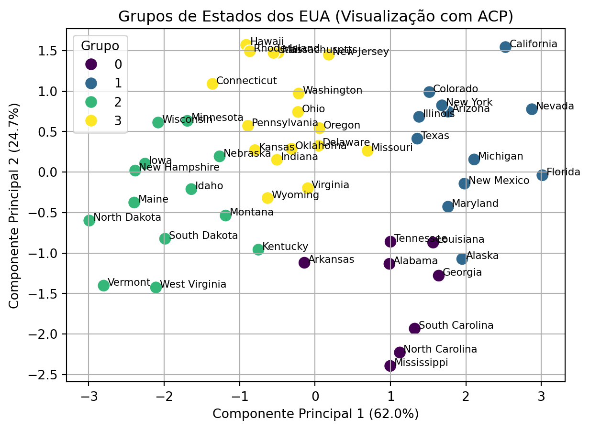

Neste exemplo, aplicaremos o procedimento de análise de agrupamentos proposto na Seção 9.3.2. O objetivo é ilustrar como a combinação de métodos hierárquicos e não hierárquicos pode levar a uma solução de agrupamento robusta e interpretável.
Utilizaremos o conjunto de dados USArrests, que contém estatísticas de crimes para cada um dos 50 estados dos EUA em 1973. As variáveis são:
Murder: Assassinatos (por 100.000 habitantes).
Assault: Agressões (por 100.000 habitantes).
UrbanPop: Porcentagem da população que vive em áreas urbanas.
Rape: Estupros (por 100.000 habitantes).
Nosso objetivo é agrupar os estados com base em seus perfis de criminalidade e urbanização.
12.1 Preparação dos Dados
O primeiro passo em qualquer análise de agrupamento baseada em distância é a padronização dos dados. As variáveis no nosso conjunto de dados têm escalas muito diferentes (Assault varia na casa das centenas, enquanto Murder varia na casa das dezenas). Se não padronizarmos, a variável Assault dominará o cálculo da distância, e o agrupamento será baseado quase inteiramente nela.
Padronizamos as variáveis para que tenham média 0 e desvio padrão 1.
Código
import pandas as pdfrom sklearn.preprocessing import StandardScalerimport statsmodels.api as smimport matplotlib.pyplot as pltfrom scipy.cluster.hierarchy import dendrogram, linkagefrom scipy.cluster.hierarchy import fclusterfrom sklearn.cluster import KMeansfrom sklearn.decomposition import PCAimport seaborn as snsfrom tabulate import tabulate# Carregando o conjunto de dadosdata = sm.datasets.get_rdataset("USArrests", "datasets").data# Separando os dados e os nomes dos estadosX = data.valuesstates = data.index# Padronizando os dadosscaler = StandardScaler()X_scaled = scaler.fit_transform(X)# Criando um DataFrame com os dados padronizados para facilitar a manipulaçãoX_scaled_df = pd.DataFrame(X_scaled, index=states, columns=data.columns)print(tabulate(X_scaled_df.head(), headers='keys', tablefmt='pipe'))
Antes de iniciar o agrupamento, é sempre útil explorar a distribuição das variáveis. A figura abaixo mostra os histogramas para cada uma das quatro variáveis do conjunto de dados.
Figura 12.1: Distribuição das variáveis do dataset USArrests.
Observamos que as variáveis de crime (Murder, Assault, Rape) parecem ter uma leve assimetria à direita, com a maioria dos estados concentrados em valores mais baixos. A variável UrbanPop tem uma distribuição mais simétrica, quase uniforme, indicando uma boa variedade nos níveis de urbanização entre os estados.
Além dos histogramas, podemos visualizar a matriz de correlação entre as variáveis para entender suas relações lineares.
Figura 12.2: Matriz de Correlação entre as variáveis.
A matriz de correlação na Figura 12.2 mostra, como esperado, uma forte correlação positiva entre as três variáveis de crime (Murder, Assault, Rape). UrbanPop tem uma correlação positiva mais fraca com as outras variáveis, sugerindo que o efeito da urbanização no aumento da criminalidade geral é moderado.
12.2 Agrupamento Hierárquico e Escolha de K
Agora, aplicamos o agrupamento hierárquico aglomerativo usando o método de Ward, que busca minimizar a variância dentro dos grupos a cada fusão. Em seguida, plotamos o dendrograma para nos ajudar a decidir o número ideal de grupos, \(K\).
Código
# Realizando o agrupamento hierárquico com o método de Wardlinked = linkage(X_scaled, method='ward')# Plotando o dendrogramaplt.figure(figsize=(7, 5))dendrogram(linked, orientation='top', labels=states, distance_sort='descending', show_leaf_counts=True, color_threshold=5.2)plt.xlabel('Estados')plt.ylabel('Distância de Ward')plt.axhline(y=5.2, color='r', linestyle='-.', label="Corte 1 (K=4)")plt.axhline(y=10.5, color='grey', linestyle='--', label="Corte 2 (K=2)")plt.legend(loc="upper left")plt.show()
Figura 12.3: Dendrograma para o conjunto de dados USArrests usando o método de Ward.
Analisando o Figura 12.3, procuramos por um corte que cruze o maior espaço vertical possível. Vemos duas opções razoáveis, indicadas pelas linhas tracejadas. O “Corte 2” (cinza) sugere uma partição em \(K=2\) grupos, separando os estados em dois grandes blocos. O “Corte 1” (vermelho), mais abaixo, sugere uma partição mais granular de \(K=4\) grupos. Uma solução com 4 grupos nos dará um entendimento mais detalhado dos perfis dos estados. Portanto, iniciaremos a análise com \(K=4\) e, ao final deste exemplo, exploraremos a solução mais simples com \(K=2\) para fins de comparação.
Para verificar a robustez dessa escolha, podemos comparar o resultado com o de outro método de ligação, como a ligação completa.
Figura 12.4: Dendrograma para o conjunto de dados USArrests usando o método de Ligação Completa.
O dendrograma de ligação completa também sugere uma partição de 2 ou 4 grupos como as mais sensatas.
12.3 K-Médias com Centroides Hierárquicos
Seguindo o nosso procedimento, agora usaremos o resultado do agrupamento hierárquico para informar o algoritmo K-médias.
Obtemos as 4 partições (grupos) do método de Ward.
Calculamos o centroide (média) de cada um desses 4 grupos.
Executamos o K-médias com \(K=4\), usando os centroides calculados como pontos de partida.
Isso ajuda o K-médias a evitar mínimos locais e a convergir para uma solução mais estável e significativa.
Código
# 1. Obter os 4 grupos do modelo hierárquicok =4hierarchical_grupos = fcluster(linked, k, criterion='maxclust')# Adicionar ao DataFrame para calcular os centroidesX_scaled_df['hierarchical_grupo'] = hierarchical_grupos# 2. Calcular os centroides iniciaisinitial_centroids = X_scaled_df.groupby('hierarchical_grupo').mean().values# 3. Executar o K-médias com os centroides iniciaiskmeans = KMeans(n_clusters=k, init=initial_centroids, n_init=1, random_state=42)kmeans.fit(X_scaled_df.drop('hierarchical_grupo', axis=1))# Obter os grupos finaisfinal_grupos = kmeans.labels_# Adicionar os grupos finais ao DataFrame original (não padronizado)data['grupo'] = final_grupos
12.4 Interpretação e Visualização dos Grupos
Com os grupos finais definidos, o passo mais importante é a interpretação. Calculamos a média de cada variável para cada grupo para criar um “perfil”.
Código
# Calcular as médias por grupogrupo_profile = data.groupby('grupo').mean()print(tabulate(grupo_profile, headers='keys', tablefmt='pipe'))
Tabela 12.2: Perfil dos grupos: médias das variáveis para cada grupo.
A Tabela 12.2 nos permite caracterizar cada grupo:
Grupo 0 (Estados Perigosos): Este grupo tem os maiores índices de assassinatos e índices também altos de agressões e estupros. A população urbana é uma das mais baixas. Podemos nomeá-lo “Estados Violentos e Rurais”.
Grupo 1 (Estados Urbanizados e Perigosos): Este grupo tem alta urbanização e níveis de criminalidade também muito altos, especialmente quanto a estupros e agressões. Um bom nome seria “Grandes Centros Urbanos Perigosos”.
Grupo 2 (Estados Seguros e Rurais): Este grupo se destaca bastante dos anteriores. Apresenta os menores índices em todas as categorias de crime. A população urbana também é a mais baixa. Inclui estados como Dakota do Norte, Vermont e Iowa. Poderíamos chamá-lo de “Estados Seguros e Rurais”.
Grupo 3 (Estados Intermediários): Este grupo é formado por estados urbanizados com menores índices de criminalidade, quando comparados aos grupos 0 e 1. Nele, nenhum extremo se destaca. Podemos chamá-lo de “Estados na Média”.
Para visualizar a separação, usamos a Análise de Componentes Principais (ACP) para reduzir a dimensionalidade dos dados para 2D e plotamos os estados, colorindo-os por grupo.
12.4.1 Interpretando os Componentes Principais
Antes de visualizar o gráfico, é crucial entender o que os eixos (os componentes principais) representam. Eles são combinações lineares das variáveis originais. Podemos inspecionar os pesos (loadings) de cada variável para interpretar o significado de cada componente.
A tabela Tabela 12.3 mostra as cargas das variáveis nos dois primeiros fatores.
O primeiro componente (PC1) explica aproximadamente 62% da variância total, enquanto o segundo (PC2) explica cerca de 25%. Juntos, eles capturam 87% da informação original, o que é excelente para uma visualização 2D.
Componente Principal 1 (PC1): Todas as quatro variáveis têm cargas positivas, com destaque para as variáveis associadas à criminalidade. Isso significa que ele representa uma medida geral de “Criminalidade”.
Componente Principal 2 (PC2): Este componente mostra um contraste. Ele tem uma carga positiva forte para UrbanPop e uma carga negativa para Murder. Isso significa que PC2 separa estados urbanizados com menor índice de assassinatos (scores altos) de estados rurais com mais assassinatos (scores baixos).
Com essa interpretação, podemos agora visualizar os grupos de forma mais informativa.
Código
# Criando um DataFrame para o plotpca_df = pd.DataFrame(data=X_pca, columns=['PC1', 'PC2'])pca_df['grupo'] = final_grupospca_df['state'] = states# Plotandoplt.figure(figsize=(7, 5))sns.scatterplot(x='PC1', y='PC2', hue='grupo', data=pca_df, palette='viridis', s=100)# Adicionando os nomes dos estados ao gráficofor i inrange(pca_df.shape[0]): plt.text(x=pca_df.PC1[i]+0.05, y=pca_df.PC2[i], s=pca_df.state[i], fontdict=dict(color='black',size=8))plt.title('Grupos de Estados dos EUA (Visualização com ACP)')plt.xlabel(f'Componente Principal 1 ({explained_variance[0]:.1%})')plt.ylabel(f'Componente Principal 2 ({explained_variance[1]:.1%})')plt.legend(title='Grupo')plt.grid(True)plt.show()

Figura 12.5: Visualização dos grupos no espaço dos dois primeiros componentes principais.
O gráfico na Figura 12.5 mostra uma separação clara dos grupos. O primeiro componente principal (PC1, eixo horizontal) efetivamente separa os estados com base na “Criminalidade Geral”, com os grupos mais violentos (0 e 1) à direita e os mais seguros (2 e 3) à esquerda. O segundo componente principal (PC2, eixo vertical) está relacionado à “Urbanização”, posicionando os grupos mais urbanizados (1 e 3) na parte superior e os mais rurais (0 e 2) na parte inferior. A análise combinada forneceu uma partição clara e interpretável dos estados dos EUA com base em seus dados sociais de 1973.
12.5 Comparação com K=2 Grupos
Como vimos no dendrograma, uma solução com \(K=2\) também é uma escolha justificável e representa a divisão de mais alto nível nos dados. Vamos repetir a etapa final do nosso procedimento para \(K=2\) e analisar o resultado.
Código
# 1. Obter os 2 grupos do modelo hierárquicok =2hierarchical_grupos_k2 = fcluster(linked, k, criterion='maxclust')# Adicionar ao DataFrame para calcular os centroidesX_scaled_df['hierarchical_grupo_k2'] = hierarchical_grupos_k2initial_centroids_k2 = X_scaled_df.drop(columns="hierarchical_grupo").groupby('hierarchical_grupo_k2').mean().values# 2. Executar K-médiaskmeans_k2 = KMeans(n_clusters=k, init=initial_centroids_k2, n_init=1, random_state=42)kmeans_k2.fit(X_scaled_df.drop(['hierarchical_grupo', 'hierarchical_grupo_k2'], axis=1))final_grupos_k2 = kmeans_k2.labels_# 3. Calcular e exibir o perfildata['grupo_k2'] = final_grupos_k2grupo_profile_k2 = data.groupby('grupo_k2').mean().drop('grupo', axis=1)print(tabulate(grupo_profile_k2, headers='keys', tablefmt='pipe'))
Tabela 12.4: Perfil dos grupos para a solução com K=2.
Grupo 0: Agrega os estados que possuem níveis de criminalidade e urbanização mais elevados.
Grupo 1: Engloba os estados mais seguros e rurais.
Essa divisão é útil para uma visão macro, mas perde a granularidade que a solução com 4 grupos nos proporcionou, como a distinção entre os estados “intermediários” e os “grandes centros urbanos”. A visualização no espaço dos componentes principais ilustra isso claramente.
Código
pca_df['grupo_k2'] = final_grupos_k2plt.figure(figsize=(7, 5))sns.scatterplot(x='PC1', y='PC2', hue='grupo_k2', data=pca_df, palette='viridis', s=100)# Adicionando os nomes dos estados ao gráficofor i inrange(pca_df.shape[0]): plt.text(x=pca_df.PC1[i]+0.05, y=pca_df.PC2[i], s=pca_df.state[i], fontdict=dict(color='black',size=8))plt.title('Grupos de Estados dos EUA (K=2, Visualização com ACP)')plt.xlabel(f'Componente Principal 1 ({explained_variance[0]:.1%})')plt.ylabel(f'Componente Principal 2 ({explained_variance[1]:.1%})')plt.legend(title='Grupo')plt.grid(True)plt.show()
Figura 12.6: Visualização dos grupos (K=2) no espaço dos componentes principais.